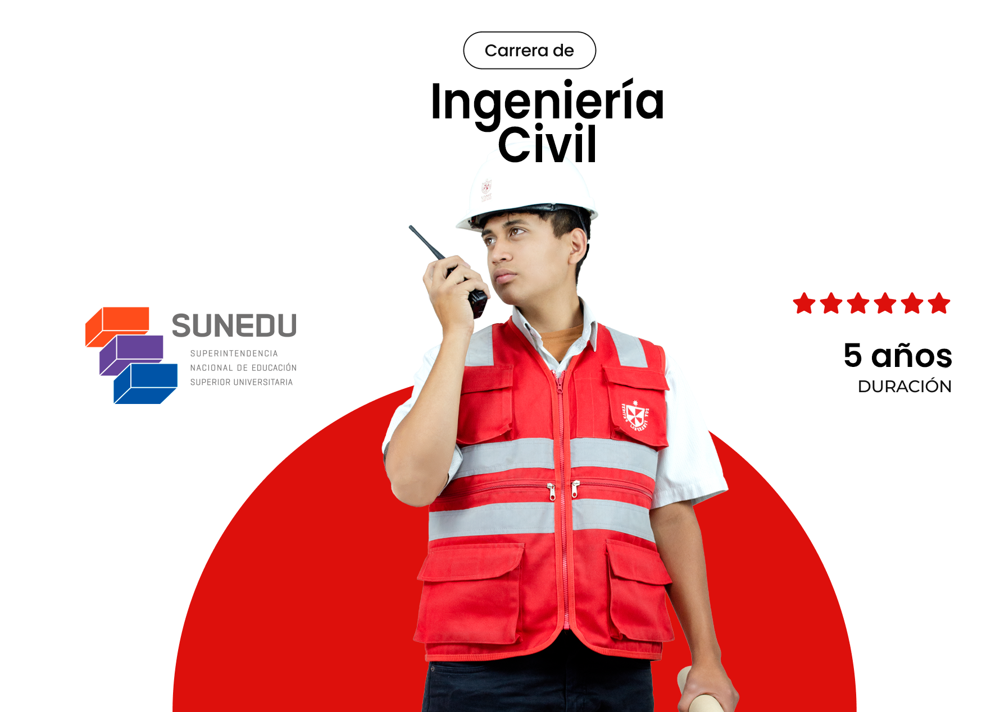
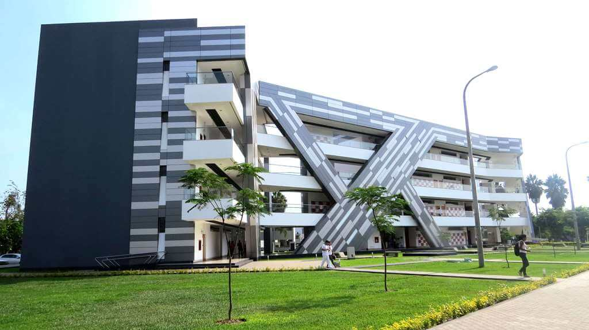
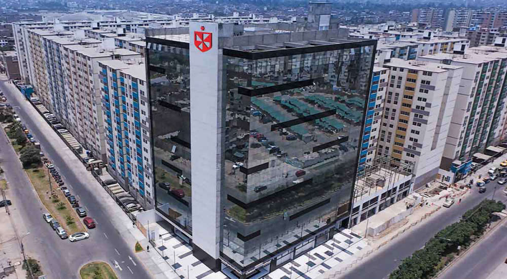

La carrera de Ingeniería de Computación y Sistemas en la Universidad de San Martín de Porres está diseñada como un programa de sistemas de información con un fuerte enfoque en gestión, negocios e innovación digital.

La Ciudad Universitaria de Santa Anita es el campus principal y más grande de la Universidad de San Martín de Porres. Funciona como la sede central de la institución y destaca por una infraestructura moderna que integra áreas académicas, deportivas, laboratorios avanzados y espacios recientemente renovados como su gimnasio universitario y zonas de alimentación.

La sede de Lima Norte de la Universidad de San Martín de Porres (USMP) se encuentra ubicada en el distrito de Comas. Es un campus moderno enfocado en brindar accesibilidad a los estudiantes de la zona norte de Lima sin la necesidad de trasladarse a las sedes tradicionales.
La carrera de Enfermería en la Universidad de San Martín de Porres se dicta a través de la Facultad de Obstetricia y Enfermería "Hilda Zoraida Baca Neglia", destacando por estar licenciada por SUNEDU y posicionada entre las opciones destacadas del país.